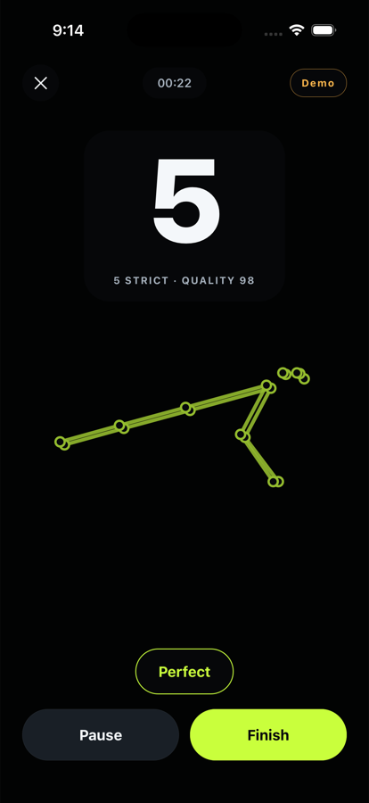
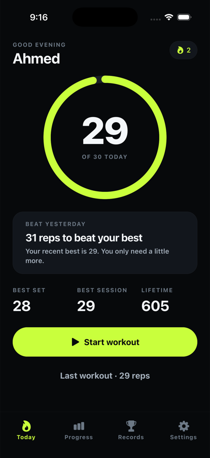
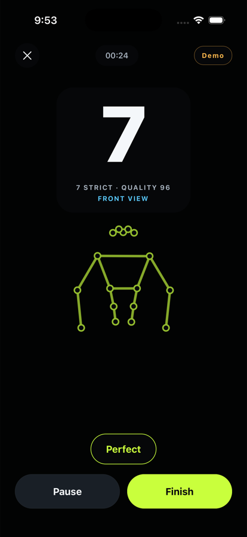
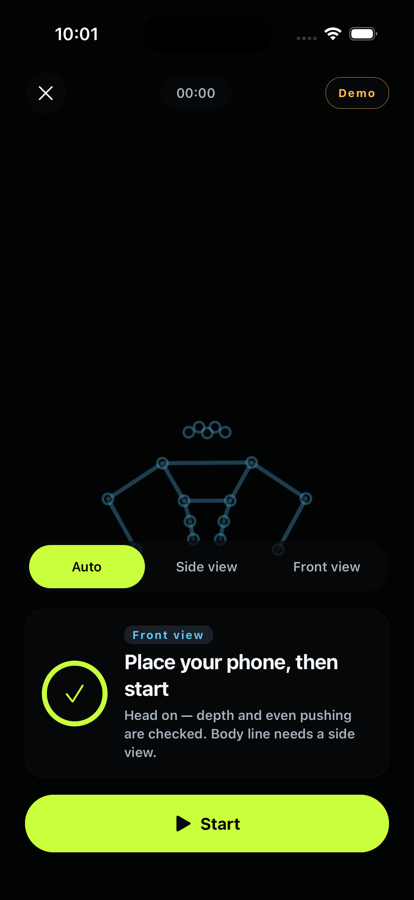
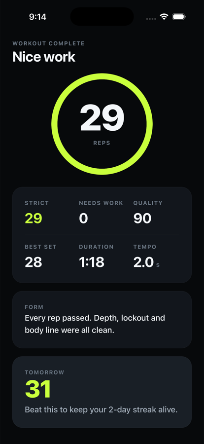
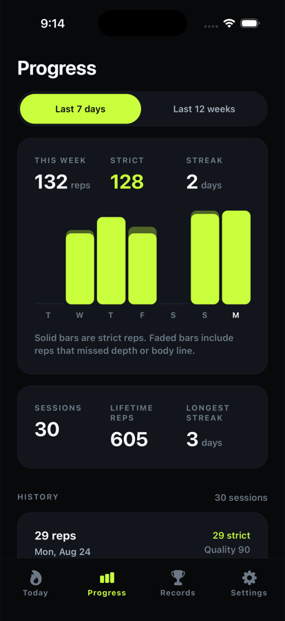
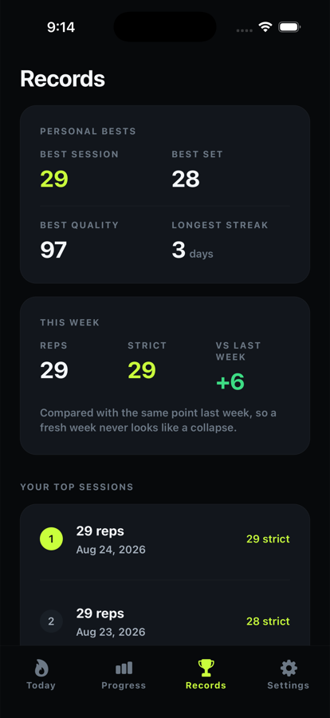
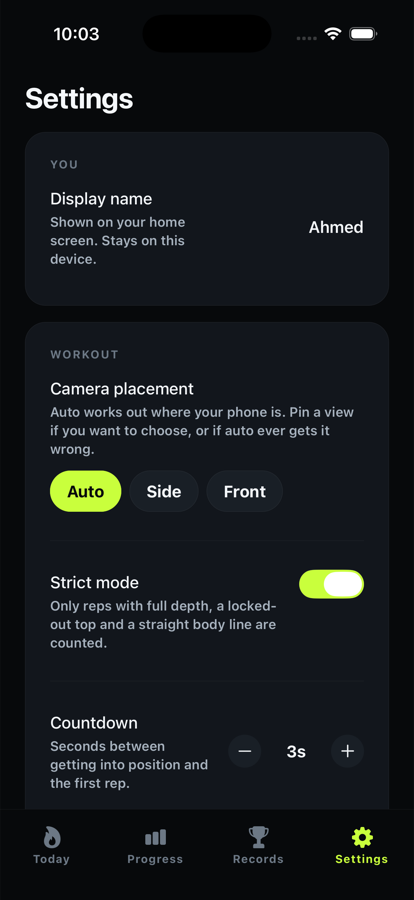

1Depth
Your elbows have to bend past roughly 95 degrees at the bottom. Halfway down is not a rep, however fast you do it.
Nexoma Labs
Hundy is a push-up coach that watches you through the camera and counts only the repetitions you actually completed. Depth, lockout and body line — in one continuous movement, or it doesn't count.
Free. No account. No ads. iPhone first.

How it counts
Most camera counters watch for movement and guess. Hundy checks three things on every single repetition, and a movement that misses one is not a push-up — it's a push-up you didn't finish.
Your elbows have to bend past roughly 95 degrees at the bottom. Halfway down is not a rep, however fast you do it.
Arms return to roughly straight at the top. Stopping short and bouncing straight back down banks a rep you never finished.
Your hips stay close to the line between your shoulders and your ankles. Sagging or piking is the rep the mirror flatters and the camera doesn't.
Side-on and angled views only
All three, in one continuous movement lasting longer than about half a second. Strict mode refuses anything less — and afterwards, rep by rep, tells you exactly which one was missing.
What Hundy does
Everything here exists to make one number trustworthy — and then to make you want to beat it tomorrow.
Before anything is counted, Hundy tells you the single most important thing to fix — too far, too close, too dark, body cut off, more than one person, not in position.
Phone on the floor beside you, or propped low in front of you facing your head. Hundy works out which you chose and applies only the rules that angle can honestly enforce.
A dashed athlete does the movement over the camera picture in your chosen placement, so you line up with it instead of guessing at distance, framing and depth.
On by default. A movement that misses depth, lockout or body line does not count at all — and Hundy says why. A number you can trust beats a number that is large.
Every rep scored on depth, alignment, lockout, symmetry and tempo — so you can see the moment your form starts sliding as you tire, not just the total.
Your phone is on the floor and your head is down, so the count is spoken out loud and every verified rep pulses. One short cue when something needs fixing — never a lecture.
Best set, best session, weekly totals, day streaks, and a rep-by-rep breakdown of every workout you have ever done. History is kept indefinitely and never quietly dropped.
A daily nudge at a time you pick, scheduled by your own phone. There is no push server, because there is no server.
The app
One accent colour for energy, everything else out of the way. The screen you look at most is a camera view, so the whole app is built to sit quietly around it.

Today's total, your streak, and one obvious thing to do.
Live tracking lines, so you can see it working.

Both arms visible, so even pushing is judged harder.

Auto by default — pin it yourself if you'd rather.

What you did, what counted, and what to fix.

Small daily sets, adding up to a number worth looking at.

Best set, best session, longest streak.

Including Delete all data — immediate and complete.
Privacy
Not a policy, an architecture. Hundy has no analytics, no accounts and no backend — there is no server for your training to be sent to, so none of this depends on us behaving well.
FAQ
More in the full FAQ.
At the end of the month, look at the total. Every rep in it is one you actually did.
Opens your mail app. Nothing is sent until you press send.